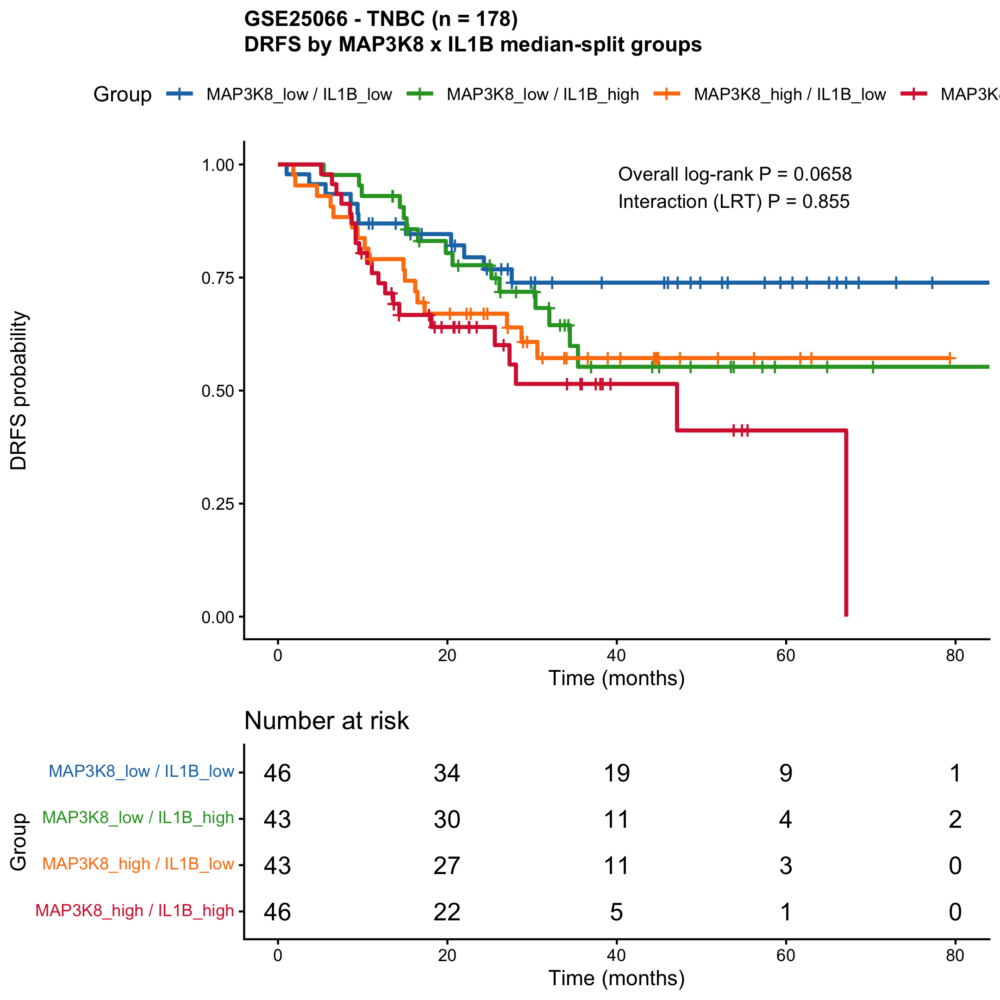

Rupa Guha, Ph.D.
About
Translational research scientist with over ten years of industry experience in in vivo pharmacology, immuno-oncology, and biomarker discovery. Hands-on background in subcutaneous and tail-vein metastasis xenograft models, immune-assay development (flow cytometry, ELISA, ELISPOT), immunogenicity testing and CRO management.
Currently expanding into AI-augmented bioinformatics, building reproducible analysis pipelines for chemoresistance biomarker discovery in triple-negative breast cancer and beyond — combining wet-lab biology with end-to-end R / survival modelling and Claude-Code-driven tooling.
Featured project
TNBC chemoresistance biomarkers — MAP3K8 & IL-1β
A self-contained, reproducible R pipeline that evaluates MAP3K8 and IL-1β as distant-relapse / chemoresistance biomarkers in chemo-treated triple-negative breast cancer (GSE25066, n=178; with independent validation in GSE41998, n=140). Each analysis ships with auto-generated Methods.docx outputs containing embedded figures, statistics, interpretation and limitations — so the analysis and publishable methods stay in sync run after run.

Four-group MAP3K8 × IL-1β median-split DRFS Kaplan-Meier in GSE25066 TNBC (n=178). Doubly-high tumours carry the highest distant-relapse risk; effects are additive (interaction LRT P = 0.86).
Areas of focus
Get in touch
I'm currently open to translational-research, in vivo pharmacology and biomarker scientist roles (full-time or contract).